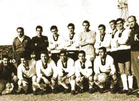
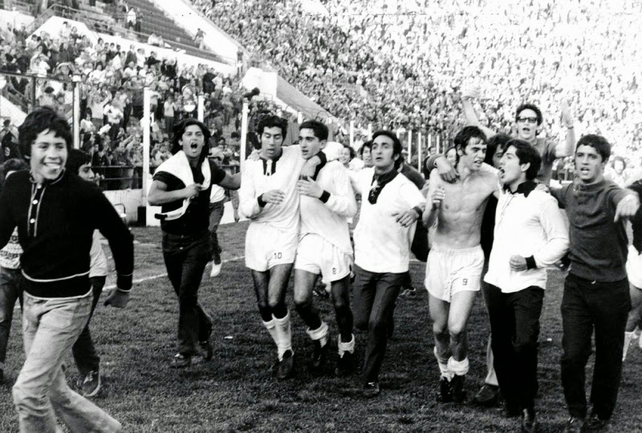
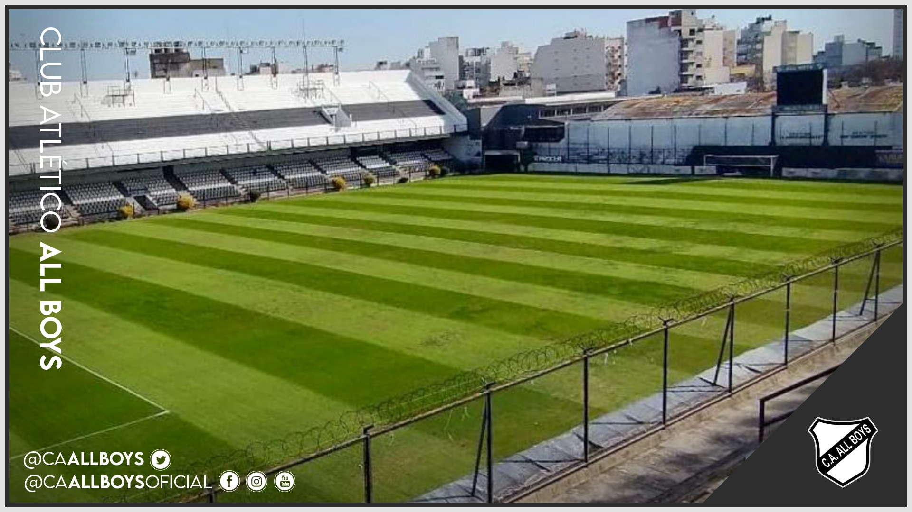
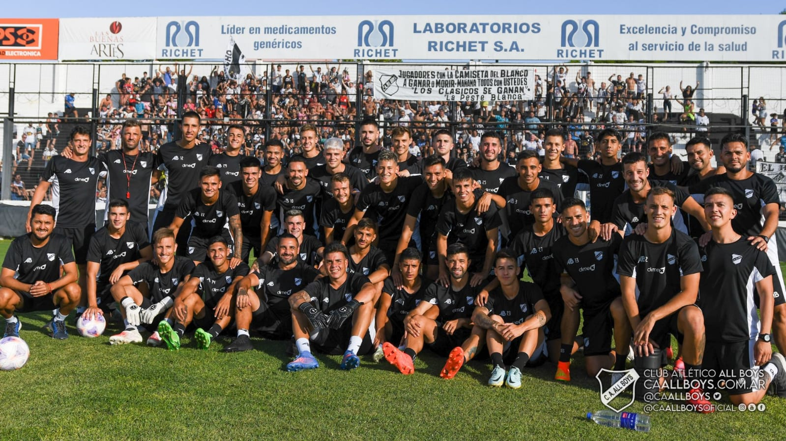

Historia del Club
Fundado el 15 de marzo de 1913, el Club Atlético All Boys ha forjado una rica historia en el corazón de Floresta, un barrio pintoresco de la ciudad de Buenos Aires. Desde sus humildes comienzos, el club ha sido un bastión del deporte y la camaradería, consolidándose como una institución emblemática en el fútbol argentino.
En sus primeros años, All Boys participó en ligas locales, ganándose el respeto de la comunidad futbolística por su dedicación y espíritu competitivo. Sin embargo, fue en 1972 cuando alcanzaron la cima de su éxito al ascender a la Primera División del fútbol argentino. Este logro marcó un hito histórico para el club, consolidando su posición entre los grandes del fútbol nacional.
A lo largo de las décadas, All Boys ha enfrentado desafíos y triunfos, pero su base de seguidores ha permanecido leal, tejiendo una red de pasión que va más allá de las victorias y derrotas. El estadio Islas Malvinas, su hogar desde 1924, ha sido testigo de momentos inolvidables y ha vibrado con la emoción de los hinchas que han alentado incansablemente a su equipo.
Además de su destacado desempeño en el fútbol, el Club Atlético All Boys ha contribuido al desarrollo deportivo y social de la comunidad de Floresta. Programas juveniles, eventos comunitarios y actividades benéficas han consolidado la posición del club como un pilar esencial en la vida de sus seguidores.
En la actualidad, el Club Atlético All Boys continúa escribiendo su historia, manteniendo viva la llama de la pasión futbolística en Floresta y más allá. Con cada partido, el club rinde homenaje a su rica herencia y mira hacia el futuro con determinación, recordando siempre que la verdadera grandeza se encuentra en el corazón y alma de su comunidad.
